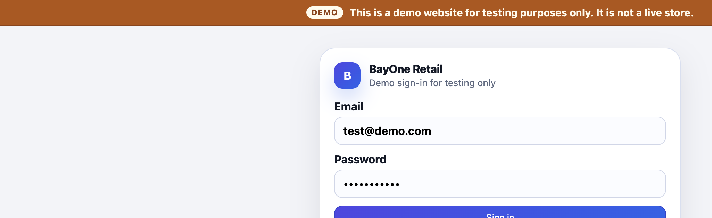
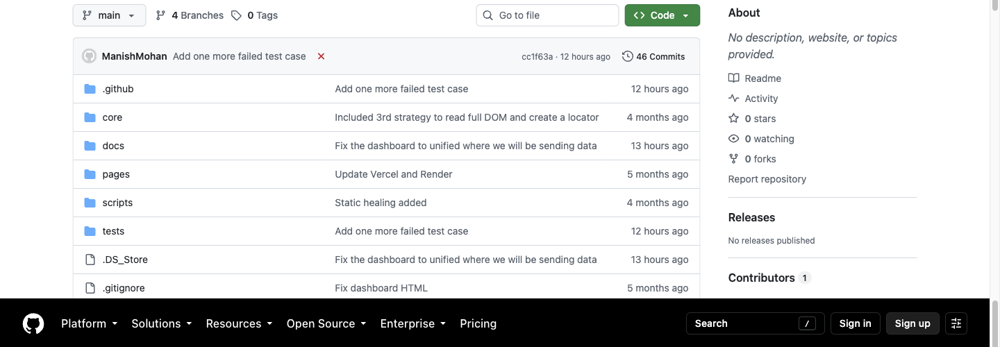
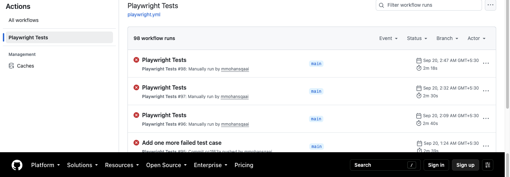
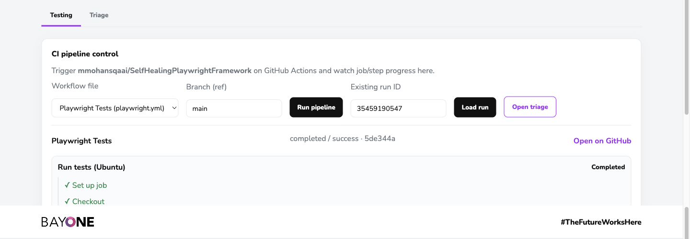
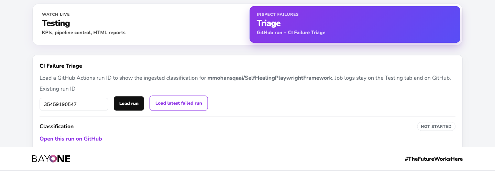
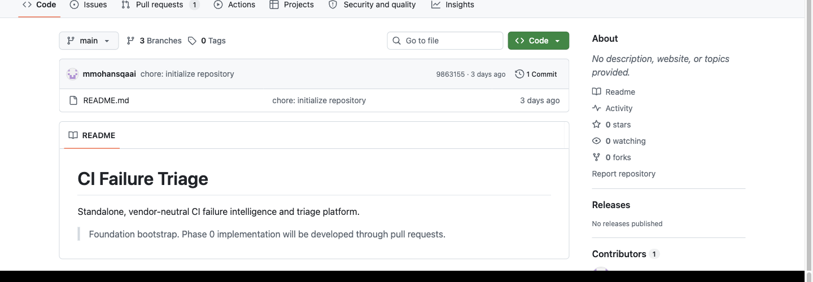

Four products. One Quality Engineering system.
How BayOne Retail, self-healing Playwright, the testing dashboard, and CI failure triage work on their own — and as a closed loop from customer journey to classified failure.
BayOne · 20 Sep 2026Arrows to navigate · F fullscreen · P print to PDF
One story, two depths
Every product slide has a business pane and an engineering pane. Non-technical executives can stay on the left. Technical executives can go one level down without a second deck.
Business executives
- What customer risk does this reduce?
- Who uses it day to day?
- What does “green / red / classified” mean in operations language?
- Where is it live today?
Technical executives
- Repo, branch, runtime, and deploy target
- Integration contract (URL, token, run ID)
- What is deterministic vs still optional
- Current operating constraints (ingest host, rate limits, database quota)
QE used to stop at “the pipeline is red”
Product
Retail must stay shoppable. A broken login or checkout is a revenue event, not just a test failure.
Automation
UI locators drift. Without healing, QE spends cycles on brittle tests instead of real defects.
Signal
GitHub shows pass/fail. Leadership still asks: product bug, test bug, environment, or ingest?
The system answers that in one place: run the journey → heal locators → publish evidence → classify the failure.
Four products at a glance
BayOne Retail
Demo storefront under test — not a live store.
retail-website-fawn.vercel.app
Self-healing Playwright
CI tests that recover when locators change.
GitHub Actions · playwright.yml
Testing dashboard
Trigger runs, watch jobs, open HTML reports.
realtime-unified-dashboard.vercel.app
CI Failure Triage
Classify why a run failed, correlated by GitHub run ID.
Same UI · /triage
BayOne Retail — the system under test
Business view
- BayOne-branded demo storefront: login, catalog, cart, checkout, admin restock.
- On-screen disclaimer: this is for testing only — not a live store.
- Demo users are shown on the login screen (customer and admin).
- This is the product leadership can click. Everything else exists to protect this journey.
Engineering view
- GitHub: mmohansqaai/RetailWebsite · branch main
- Deploy: Vercel · https://retail-website-fawn.vercel.app
- Playwright default BASE_URL is this host.
- App is independent of the dashboard; QE observes it, it does not call QE APIs.
BayOne Retail login (deployed)

Source: https://retail-website-fawn.vercel.app/login · captured 20 Sep 2026 after BayOne rebrand. Demo banner is on every page.
Self-healing Playwright — tests that do not die on locator drift
Business view
- Runs the retail journey in GitHub Actions on every relevant change, and on demand from the dashboard.
- When a button or field is renamed, healing tries backup locators before failing the suite.
- Produces an HTML report leadership can open from the Testing tab.
- Outcome: fewer “the test is flaky” meetings; more time on real product issues.
Engineering view
- GitHub: mmohansqaai/SelfHealingPlaywrightFramework · main
- Three layers: static locator chains → seed discovery → DOM scan.
- Engine: core/self-healing.ts; page objects in pages/.
- CI: .github/workflows/playwright.yml (Chromium, artifacts, ingest curl).
- Today ingest still posts to the legacy Render host unless the workflow secret is changed.
Repository and CI evidence

github.com/mmohansqaai/SelfHealingPlaywrightFramework · 46 commits · core / pages / tests / workflows

Actions · Playwright Tests · recent runs include both greens and intentional failed cases for triage demos
Real-time Testing dashboard — the QE control room
Business view
- One BayOne-branded UI. Testing tab is for “is the suite running and what did it do?”
- Run pipeline from the screen — no GitHub console required for a demo.
- Watch job steps complete (checkout → Playwright → publish report).
- Open the Playwright HTML report for a run without leaving the dashboard.
Engineering view
- Repo: mmohansqaai/realtime-testing-dashboard
- Branch in production: unified-testing-triage-dashboard
- UI: Vercel · API: Render FastAPI + Alembic + Postgres (Neon)
- GitHub PAT: repo + workflow. Ingest: X-Ingest-Token (never in the frontend).
- Correlation key: provider + repository + GitHub runId
Testing tab — pipeline control

https://realtime-unified-dashboard.vercel.app · workflow playwright.yml on main · run 35459190547 completed / success. API: realtime-unified-dashboard-api.onrender.com
CI Failure Triage — from red pipeline to a named cause
Business view
- Triage tab answers: product defect, automation defect, environment, or CI plumbing?
- “Load latest failed run” is the management demo path — one click, no hunting IDs.
- Successful runs correctly show triage not started. Classification is for failures.
- Engine repo is separate so the classifier can later serve many applications, not only this retail demo.
Engineering view
- Engine: mmohansqaai/ci-failure-triage · working branch phase-1-github-connector (GitHub default is still main).
- CLI analyzes provider + repository + run-id. No public web UI of its own.
- Dashboard consumes POST /api/triage/results and reads GET /api/triage/result.
- Fallback in the dashboard: deterministic GitHub job/step classification when no ingested row exists (Playwright step → AUTOMATION_DEFECT, setup → ENVIRONMENT, publish/curl → CI_INFRASTRUCTURE).
Triage tab — correlated to the same GitHub run

Same run ID as Testing. Classification idle because this run succeeded — expected behavior.

github.com/mmohansqaai/ci-failure-triage — vendor-neutral engine; GitHub connector is the first adapter.
How the four products become one QE loop
What leadership watches
Is retail up? Did tonight’s suite pass? If not, is it ours (product), QE’s (test), or the platform (runner / ingest)?
What changes vs a GitHub-only world
GitHub remains source of truth for jobs. The dashboard is the operating console. Triage is the decision layer so a red X is not the last word.
Runtime architecture
Failure taxonomy technical executives should expect
| Classification | When it fires (dashboard fallback) | Who should act |
|---|---|---|
| AUTOMATION_DEFECT / PLAYWRIGHT_TEST_FAILURE | Failed step name matches playwright / test / spec / e2e | QE: open HTML report, fix spec or assert product bug |
| ENVIRONMENT / RUNNER_SETUP | Failed setup, checkout, install, node, browser, cache | Platform / QE: pin actions, retry runner |
| CI_INFRASTRUCTURE / DOWNSTREAM_SERVICE | Failed publish, dashboard, ingest, health, curl | Platform: ingest URL, token, Render cold start |
| UNKNOWN / UNCLASSIFIED_STEP | No pattern match | Human review of GitHub step logs |
| PRODUCT_DEFECT, FLAKY_TEST, … | In schema now; richer engine / AI-assisted modes later | Product vs QE depending on evidence |
Confidence is explicit (e.g. 88 for Playwright step, 55 for unknown). Successful conclusions do not create a triage result.
Where to look tomorrow morning
| Product | Latest GitHub | Deployed / run surface |
|---|---|---|
| Retail | github.com/mmohansqaai/RetailWebsite · main | retail-website-fawn.vercel.app |
| Self-healing | github.com/mmohansqaai/SelfHealingPlaywrightFramework · main | Actions · playwright.yml |
| Testing + Triage UI | github.com/mmohansqaai/realtime-testing-dashboard · unified-testing-triage-dashboard | realtime-unified-dashboard.vercel.app · /triage |
| Dashboard API | same repo | realtime-unified-dashboard-api.onrender.com |
| Triage engine | github.com/mmohansqaai/ci-failure-triage · phase-1-github-connector | CLI only · posts into the dashboard API |
Canonical list also lives in SETUP.md at the dashboard repo root. Do not demo the legacy Render hosts.
What this system already proves
Independence
Retail, tests, console, and classifier are four repos. Any one can evolve without rewriting the others — they share contracts, not code.
Operability
A non-GitHub audience can trigger a run, watch it, and open triage from a BayOne URL.
Honesty on the remaining work
Point Playwright ingest at the unified API; keep Neon within quota; keep GitHub tokens off the shared rate-limit pool; deepen engine classification beyond step-name fallback.
The QE system is not a single dashboard. It is a product under test, resilient automation, a live console, and a named decision on every red run.
BayOne Quality EngineeringQuestions · live walkthrough on the unified URL